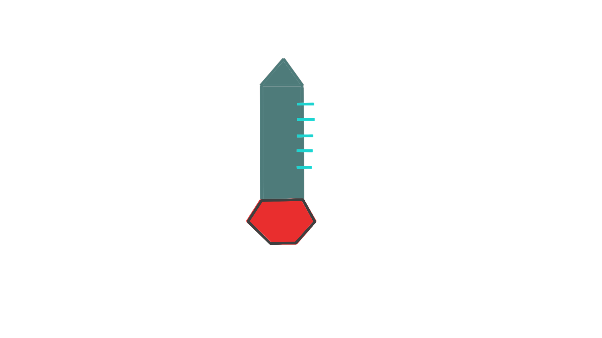

<div class="route-container center">
  <div class="measurement-container">
    <div class="measurement-container__title text-muted">
      <h3>{{ name.toUpperCase() }}</h3>
    </div>
    <div class="measurement-container__spinner">
      <div
        *ngIf="!retrieved"
        class="spinner-border text-secondary"
        role="status"
      >
        <span class="visually-hidden"></span>
      </div>
    </div>
    <div class="measurement-container__measurements">
      <ul class="list-group measurement">
        <li
          class="list-group-item measurement__item text-muted"
          *ngFor="let measurement of shownMeasurements; let i = index"
        >
          {{ measurement.temperature.toFixed(2) }} &#8451;
          <div>
            <span *ngIf="i === 0" class="badge badge-secondary badge-pill mr-1"
              >Latest</span
            >
            <span class="badge badge-primary badge-pill">{{
              measurement.timestamp
            }}</span>
          </div>
        </li>
      </ul>
    </div>
    <div class="measurement-container__img">
      
    </div>
  </div>
</div>
